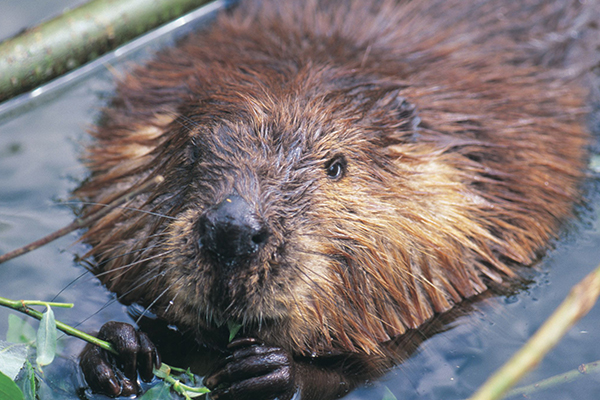
Bobre vedia zaplávať aj 800 metrov s jedným nádychom
Mravce spia približne 253-krát za deň
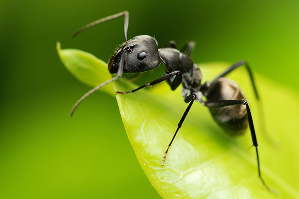
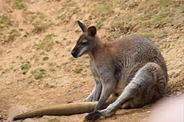
Ak zdvihnete kengure chvost, nebude vedieť skákať pretože stratí balanc a spadne
Orol vie zabiť mladého jeleňa a odletieť s ním
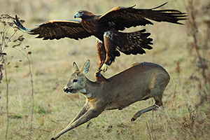
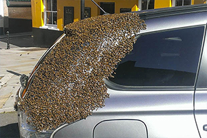
Roj 20 000 včiel nasledoval auto 2 dni, ich kráľovná bola totiž zatvorená vnútri
Vydry sa v spánku držia za ruky aby od seba neodplávali
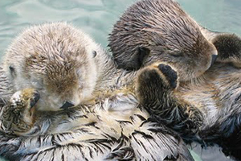
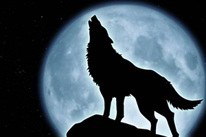
2 rôzny vlci nikdy nevyjú na rovnakej note, vytvárajú tak ilúziu že ich je viac ako v skutočnosti
Srsť polárneho medveďa nie je biela ale priehľadná
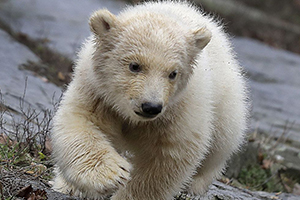
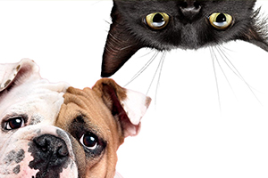
Psy vedia vydať približne 10 zvukov a mačky okolo 100
Krevety vedia plávať iba smerom dozadu
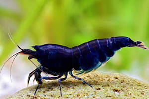
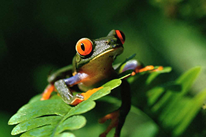
Žaby nevedia prehltnúť bez toho aby zavreli oči
Leňochodovi by trvalo 1 mesiac kým by prešiel 1.5 km
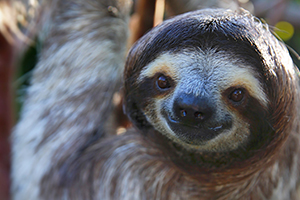
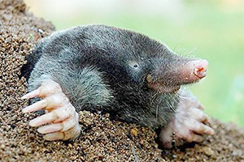
Krty dokážu vykopať za jednu noc tunel dlhý až 90 m
Med sa nikdy nepokazí
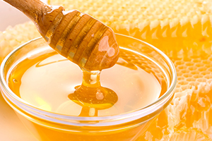
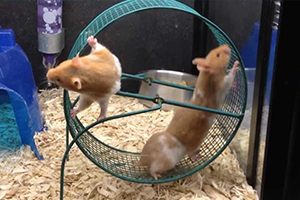
Škrečky cez noc zabehnú na kolese do 13 km
Slon je jediný cicavec ktorý nevie skákať
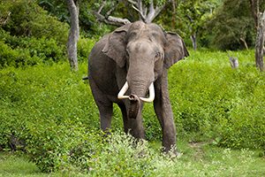
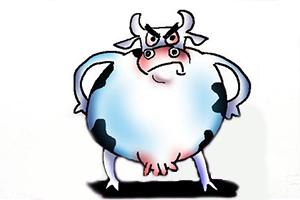
Kravy zabijú ročne viac ľudí ako žraloky
Motýle ochutnávajú jedlo pomocou nôh
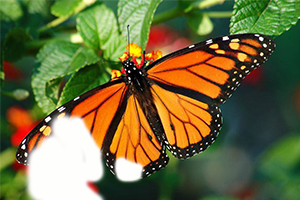